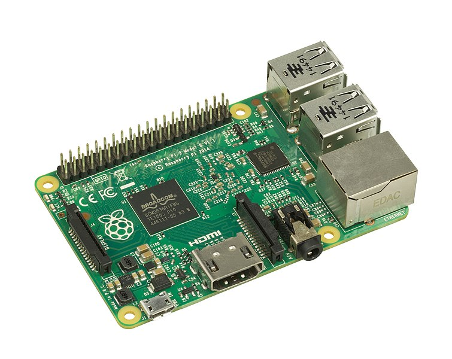
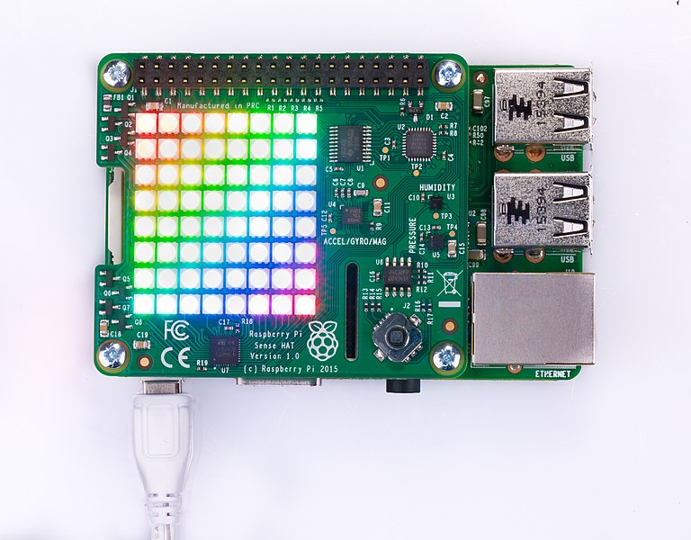

Découverte de la senseHat
Le matériel
Le Raspberry Pi
Le Raspberry Pi est un nano-ordinateur monocarte de la taille d'une carte de crédit conçu par des professeurs du département informatique de l'université de Cambridge. Il dispose de pins GPIO (General Purpose Input/Output) qui permettent la connexion de cartes d'extension ou d'autres composants électroniques pour réaliser des montages.
La SenseHat
La SenseHat est une carte électronique qui regroupe une série de capteurs, une matrice à leds, des entrées et sorties digitales ou analogiques sur une carte d’extension tout-en-un pour une utilisation directe avec un Raspberry Pi.
Nous utiliserons un simulateur de Raspberry Pi et de SenseHat, disponible ici :
Afficher une image sur la senseHat
Le code suivant permet l'affichage du drapeau bleu, blanc, rouge.
from sense_hat import SenseHat
import time
s = SenseHat()
s.low_light = True
green = ( 0, 255, 0)
yellow = (255, 255, 0)
blue = ( 0, 0, 255)
red = (255, 0, 0)
white = (255, 255, 255)
black = ( 0, 0, 0)
pink = (255, 105, 180)
brown = (120, 10, 10)
cyan = ( 0, 255, 255)
def flag():
B = blue
W = white
R = red
O = cyan
M = brown
image = [
M, B, B, W, W, R, R, O,
M, B, B, W, W, R, R, O,
M, B, B, W, W, R, R, O,
M, B, B, W, W, R, R, O,
M, B, B, W, W, R, R, O,
M, O, O, O, O, O, O, O,
M, O, O, O, O, O, O, O,
M, O, O, O, O, O, O, O,
]
return image
s.set_pixels(flag())
- un soleil
- une feuille d'arbre
- un flocon de neige
- une goutte d'eau
- un desert
Utilisation des capteurs
Le Sense HAT dispose d'un ensemble de capteurs lui permettant de détecter les conditions autour de lui. Il peut, entre autres, détecter :
- La pression (dit "Pressure" en anglais).
- La température (dit "Temperature" en anglais).
- L'humidité (dit "Humidity" en anglais).
- s.get_temperature() - qui retourne la température en degrés Celsius.
- s.get_pressure() - qui retourne la pression en millibars.
- s.get_humidity() - qui retourne le taux d'humidité sous forme d'un pourcentage.
- un soleil si la température dépasse 35°C
- une feuille d'arbre si la température est comprise entre 15°C et 35°C
- un flocon si la température est en dessous de 15°C